← 返回阅读库 · 原论文目录
论文讲解阅读文档 · 表征学习 · v167
Learning by Aligning Videos in Time[2103.17260]
视频时长 00:11:12；讲解文字 4,833 字符；提取讲解画面 39 张。按视频原顺序阅读，每段文字保留时间戳。
文字来自整段视频的自动语音转写，按自然停顿分段，并与 PPT / 论文页面 / 演示画面对齐。未将讲解压缩为摘要；术语、数字和口述公式请结合画面及原论文核对。 阅读稿已校正规范部分明确术语误识别；原始逐字稿和每处修改记录另行保留。
讲解画面为源视频截图（640×360），不是可编辑 PPT 文件。全片按每秒 2 帧扫描内容变化，逐步展开页保留；连续动画保留代表画面。清晰度受源视频限制。
下载完整资料包 · 含离线 HTML、PDF、Word、全部 PPT 画面和字幕。
原论文与材料
Learning by Aligning Videos in Time · 下载完整 PDF（15 页）
按时间阅读
00:00:00–00:00:18 · 画面 001
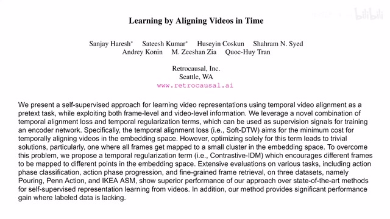
00:00:00–00:00:18 · 画面 001大家好,今天我们来快速说一篇论文 Learning by Aligning Videos in Time。那么这篇论文的主要意图呢，就是通过对齐不同视频之间它们的这个语义信息，来帮助我们学到一个更好的 representation，来方便我们下游任务的进行。那么为什么我们说 Aligning 能够把这个事情做成呢？那你想，我们假如说人类去对齐这样两个视频的话
00:00:18–00:01:24 · 画面 002
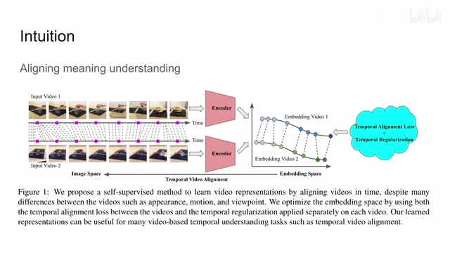
00:00:18–00:01:24 · 画面 002首先呢，你在了解这场视频中都在干什么事情，这就涉及到一个对这个视频中语义的一个分析。那么同时呢，你要准确的根据我这个图像中特定的这个区域来识别出我们现在这个视频正在干什么事情，正在进行到哪一阶段。那么这种要求呢，在无形之间就让我们的网络呢注意到它应该注意的一个部分。那么具体来看，本文中作者是怎么样操作的我们把这个视频中的每一帧都放到我们的 encoder 里面，这个 encoder 呢，你比如说用 ResNet-50 这样的一个标准的 cnn 就可以了。然后呢，他会把我们的 feature 投到一个 latent representation 或者叫 embedding space 里面。那么既然是对齐嘛，我们就要找到他们每一帧的这个对应的关系，更准确的来说呢，就是反应相同于一信息的某一帧呢，他们在这个 embedding space 中的距离呢要尽量的接近。那么为了达到这样的目的呢，我们的网络结构为什么变化
主要呢，就在于这个 loss 他的这个设计上。那么下面呢，我们看作者具体的这两个 loss 的设计。那么首先第一个呢，是这个 temporal alignment loss，因为我们一开始呢就想要这两个视频他们相互对齐嘛，所以呢，我们要在 loss 上规定他们相互对齐。那么关于两个 sequences 的对齐呢
00:01:24–00:01:58 · 画面 003
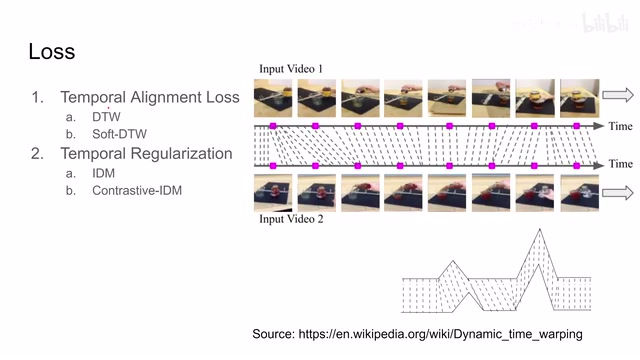
00:01:24–00:01:58 · 画面 003我们已经有很成熟的方法了，就是 DTW Dynamic Time Warping。那么现在我们想要办法把它变成 Loss 就可以了。但是如果单纯的只有一个对齐的 Loss 还不够，你想，我们的网络如果把所有的图像都给它涂到同一个 Representation 上，大家都是一样，大家一样烂，这个也没有什么实际的意义。所以我们这里需要加一个 Regularization，我们之后会详细介绍作者的实现
00:01:58–00:02:00 · 画面 004
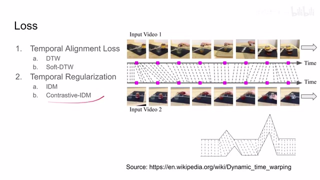
00:01:58–00:02:00 · 画面 00400:02:00–00:02:03 · 画面 005
00:02:00–00:02:03 · 画面 005那么首先呢，我们来看到这个 temporal alignment loss，那更确切的来说呢，就是这个 dynamic time warping 还有它的 soft 版本。那么为了对齐两个视频呢，其实我们有非常简单粗暴的方法，首先呢需要先定义一个 distance matrix，那它呢就像这里显示的一样非常直接，你的行比如说是第一个视频中的所有的帧，你的列呢是第二个视频中所有的帧
00:02:03–00:02:25 · 画面 006
00:02:03–00:02:25 · 画面 006那么这个矩阵的每一个元素呢，就是这样一个距离，这个距离呢，就是我们特定的这个 image 经过 encoder 之后得到这个 embedding，然后两个 embedding 之间他们这个 L2 distance。那么在有了这样一个矩阵之后呢，我们就可以做这个 DTW 了，这是一个经典的这个动态规划的问题，你从左上角一路给它对齐到右下角，它的转移式子呢就像这样，那简单来说就是找一个距离最短的路径。但是呢，我们注意到因为我们这里有一个 minimize
00:02:25–00:02:26 · 画面 007
00:02:25–00:02:26 · 画面 00700:02:26–00:02:33 · 画面 008
00:02:26–00:02:33 · 画面 00800:02:33–00:02:46 · 画面 009
00:02:33–00:02:46 · 画面 00900:02:46–00:02:47 · 画面 010
00:02:46–00:02:47 · 画面 01000:02:47–00:03:36 · 画面 011
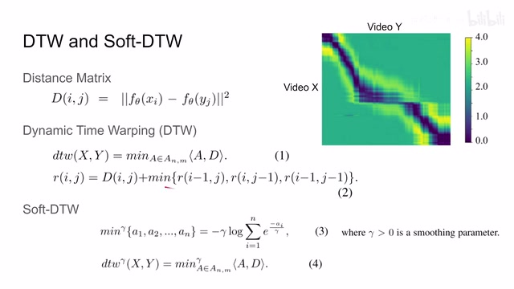
00:02:47–00:03:36 · 画面 011它呢是没法传递梯度的，这意味着我们这个 dtw 呢是不能直接作为我们 loss 来使用。当然了，这个并不是一个很严重的问题，在之前的工作中呢，有人就提出了这个 soft DTW，它的原理呢就是把这个 minimize 给它变成这个样子。那么在这个式子呢，你可以看到它先把所有的输入呢取反，然后除上这个 gamma 扔到这个指数函数里面，再给它求对数。那这样一来一回的这个操作呢那这样一来一回的操作呢，就让它的输出呢尽量接近于这几个数中最小的一个时了。那么你现在把这个 soft minimize 替换成原来的这个 minimize 就可以写成我们的这个 soft dtw，也就是这个矩阵里面从左上到右下一条路径上的所有元素的和
00:03:36–00:05:01 · 画面 012
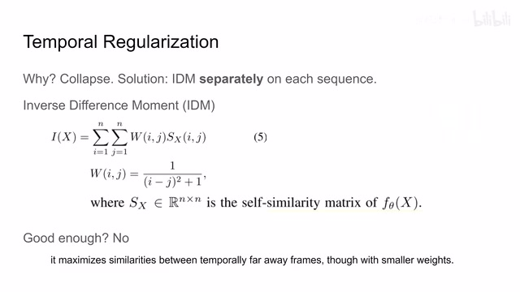
00:03:36–00:05:01 · 画面 012但是呢,正如我们一开始提到的,如果只有这个 Alignment Loss 的话,那么我的模型把所有的这个图像都映射到同一半点,那岂不是 Loss 非常低,大家都很开心了吗?那当然不是了,这个模型就坍塌了嘛,最后我们后面一点没有帮助。那么为了避免这种情况呢,作者这里使用这个 IDM,Inverse Difference Moment,来帮我们避免这种情况。那更具体的来说呢,是对于每一个单独的视频序列都加了这样一个 Loss。
那么下面我们来看 loss 的构成。那么 loss 本质上是一个求和母的 x 是一个视频。那么 loss 把视频套两层循环，也就是计算每一帧相互之间的数值。这个数值是什么？我们先看看 ww 是两个图像的 index，它们的 x 的平方加 1 ，然后取倒数乘上 sx。就是 self similarity matrix。其实也就是这两个图像在 embedding space 或者是 latent space 里面它们的 L2 distance。那么很显然这个矩阵是一个对称的矩阵，你只计算一半就可以了。那么然后我们来看这个 loss 的变化趋势。那么这个 W 是随着 index 的增加它越来越小。也就是说我视频的两人图像如果它们在时间上差得越远，那么在计算 idm 的时候它的权重越小。
但是呢，正如你所注意到的，这个 loss 呢才是存在一个设计的漏洞。那因为我们的这个 IS 呢是越大越好，我们要 maximize 这个值。那假如说我就不管这个 W，那我把所有的这个 similarity 都调大，那这样取得的值不就是更大了？那么为了规避这种情况呢，作者对这个问题呢做了一点点的改进。那就是看到这里，那这个 Ibar 这个 loss，那么与之前相同的还是两层的循环。但是呢，我们这里的权重改掉了。
00:05:01–00:05:07 · 画面 013
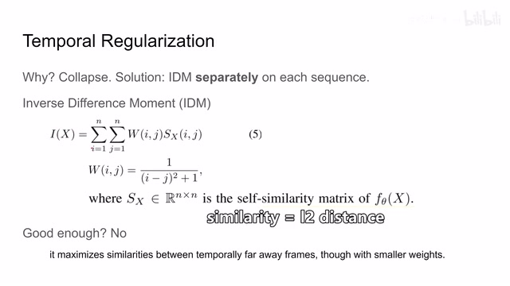
00:05:01–00:05:07 · 画面 01300:05:07–00:05:13 · 画面 014
00:05:07–00:05:13 · 画面 01400:05:13–00:05:14 · 画面 015
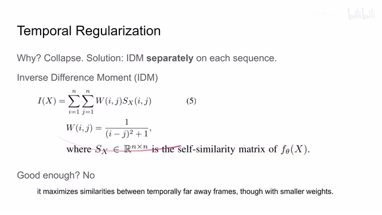
00:05:13–00:05:14 · 画面 01500:05:14–00:05:15 · 画面 016
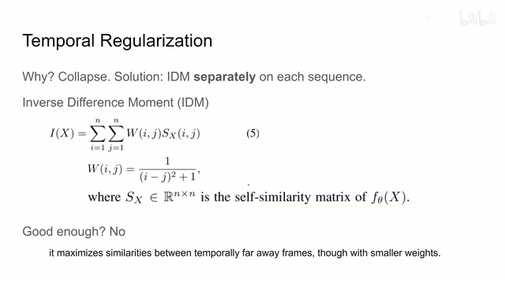
00:05:14–00:05:15 · 画面 01600:05:15–00:05:33 · 画面 017
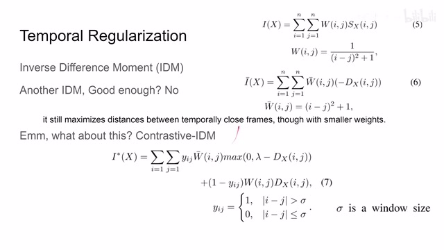
00:05:15–00:05:33 · 画面 017这个是变成了 W 吧。它呢直接就是两个这个 index 它们之间的距离。那么这个 similarity 也换掉了，变成了负的 distance。那么整个式子呢我们要最小化。那么因为这个 distance 这个 L2 distance 它是一个非负的，所以呢我们取了符号之后呢，它就是变成一个非正的。那显然如果我们两个 index 的差距很大，同时呢这两帧的距离很大，它呢就能够帮助我们这个 loss term 变得很小。
00:05:33–00:05:34 · 画面 018
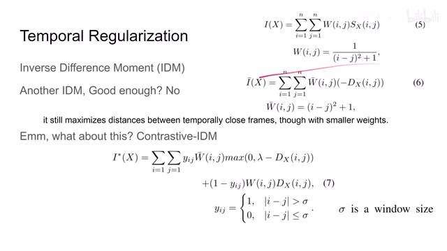
00:05:33–00:05:34 · 画面 01800:05:34–00:06:50 · 画面 019
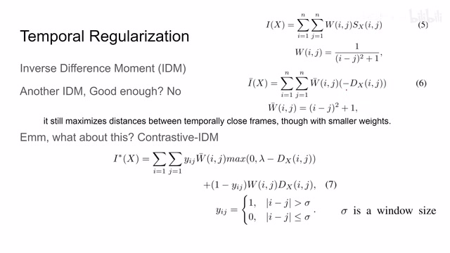
00:05:34–00:06:50 · 画面 019那么这个表达听起来也是一个很不错的设计。但是呢，聪明如你可能又注意到了，哎，如果我这个 xj 他俩本来就很小，那如果我要让他这个整个 loss term 尽量的小，那我是不是这个当 xj 很小的时候，这个 dx 也变得非常大？也就是说我在时间上相近的两个帧他们的 embedding 之间的 distance 也变得很大。那这样子呢也能够优化这个 loss。那这样一来又跟我们的初衷相违背了。
真是按下葫芦起来嫖啊，真是不让人省心一个个的。那么面对这么皮的两个 loss 的这个特性，我们就没有办法了吗？当然不是。因此呢，在这里呢，本文提出了这个 contrastive idea。那它的原理呢就是我设置一个 windows size 一个域值。如果呢，我的这两针距离比较大，那么我就取一个形如这样的一个 loss 方式。如果这两针呢它们的时间上的距离相对比较近，那么呢我就取一个形如这样的一个方式。
你可以看到呢，虽然他写的很唬人，但是实际上他就是通过拼凑这两个还有这个给他组合起来组成了这个 loss。那么这样子呢就相当于保留了这两个 loss 方式有用的部分。他们两个呢取长补短合作共赢来构造我们这样一个 loss，是一个非常直接而且有用的方法。那么最后呢我们只要把这个 dtw loss 还有我们之前刚介绍的这个 cidm loss 给他组合起来啊，这样的一个形式就可以得到我们最终的 loss。
00:06:50–00:06:53 · 画面 020
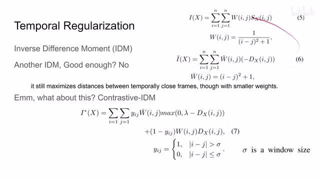
00:06:50–00:06:53 · 画面 02000:06:53–00:06:59 · 画面 021
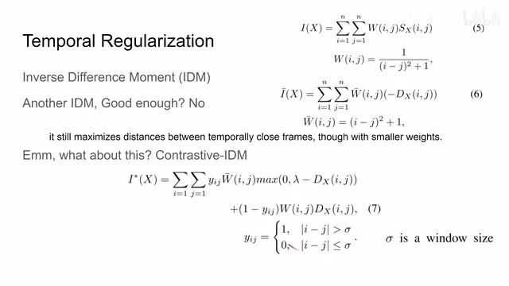
00:06:53–00:06:59 · 画面 02100:06:59–00:07:01 · 画面 022
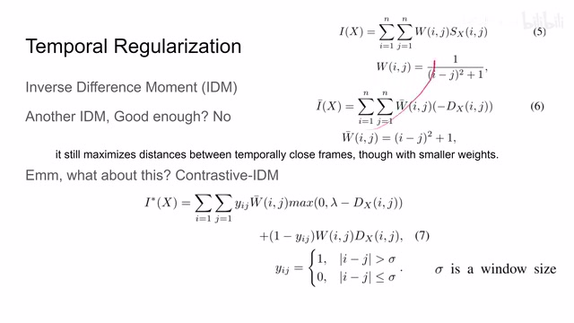
00:06:59–00:07:01 · 画面 02200:07:01–00:07:05 · 画面 023
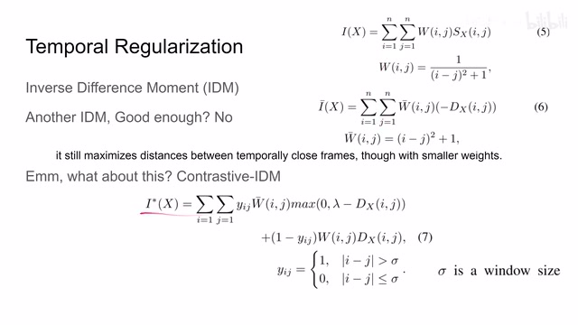
00:07:01–00:07:05 · 画面 02300:07:05–00:07:11 · 画面 024
00:07:05–00:07:11 · 画面 02400:07:11–00:07:12 · 画面 025
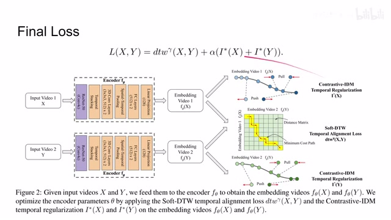
00:07:11–00:07:12 · 画面 02500:07:12–00:07:16 · 画面 026
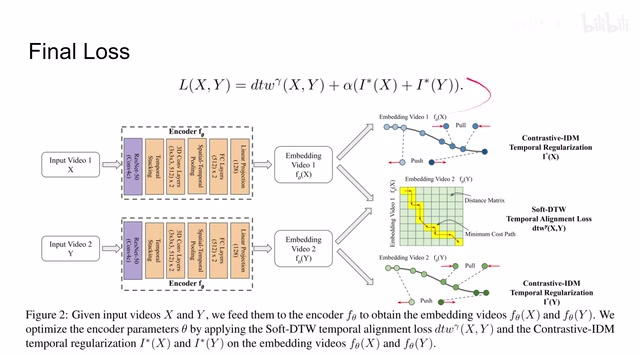
00:07:12–00:07:16 · 画面 026那么下面这个图就是直观的反映了这个情况。那首先呢是这个 lining 的问题。那再要是对于每一个单独的视频呢，我们时间上相差较远的两只呢，让他们相互远离，时间上相对靠近两只呢，他们相互靠近。他的思路呢很像之前我们介绍的 tcn。但是呢，tcn 用的是 triplet 这个 loss。
00:07:16–00:07:38 · 画面 027
00:07:16–00:07:38 · 画面 027而且存在其他视频的帧作为 negative samples。那么当然了，关于这个地方我还有一个小的顾虑就是关于 CIDM loss。你可以看到它的 loss 的设计没有根据视频的长度对整个 loss 的绝对值做一个调整，这就导致视频越长 loss 越大。不知道作者在实际的代码中有没有考虑这个问题。他说他样本中视频的长度都差不多。当然这是一个很小的细节。好的，那么我们介绍完了作者的主要的方法。
00:07:38–00:07:40 · 画面 028
00:07:38–00:07:40 · 画面 02800:07:40–00:07:44 · 画面 029
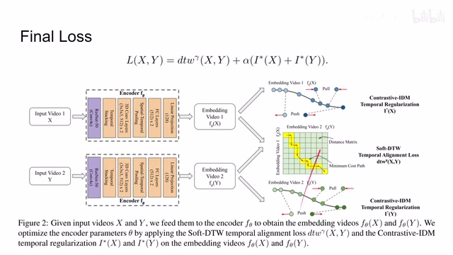
00:07:40–00:07:44 · 画面 02900:07:44–00:08:03 · 画面 030
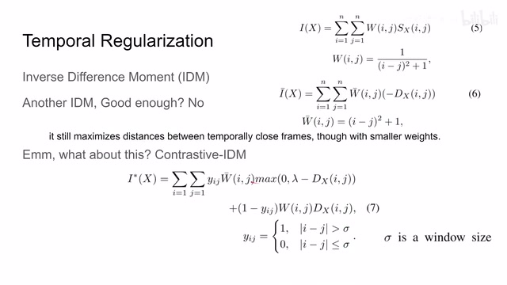
00:07:44–00:08:03 · 画面 03000:08:03–00:08:12 · 画面 031
00:08:03–00:08:12 · 画面 031下面呢我们就来看作者是怎么样设计实验设计指标去验证本文方法的有效性，那么首先是数据集，这里呢有三个数据集，它里面的标注呢很有意思，就是按照我们这一个动作不同的阶段来给它进行的标注，具体的这个方法呢你可以看到它原文中的描述，那么我们评测哪些任务呢？就包括首先是这个对于这个任务阶段的预测，我把这个 feature 拿出来放 SVM 就可以了。
00:08:12–00:09:00 · 画面 032
00:08:12–00:09:00 · 画面 032然后呢是这个 progression 这个 regression 的问题，就是用一个这个 regressor 呢来评估一下我们这个从一个阶段到另一个阶段视频进展到什么程度呢？那么还有一个套呢是两个视频对其程度的一个描述，那么最后这个 AP 呢是做 frame retrieval 的时候呢，就是从一个视频中取一人到另一个视频中查他的这个对应的例帧嘛，那么我们下面来看作者汇报的一些结果吧，那么在开始正式的实验之前呢，作者先做了 evaluation。
00:09:00–00:10:02 · 画面 033
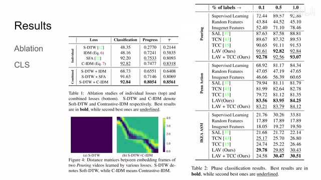
00:09:00–00:10:02 · 画面 033那其实就是单独的这几个 loss 拿出来对比一下，然后呢再看他们怎么组合效果最好，发现呢就是这个 soft DTW 还有这个 cidm 他俩加起来取得的效果呢是最好的，那么这里呢你可以看到，那如果我没有这个 cidm 的话，那所有的这个 representation 呢都摊在他一个点，他距离呢都是 0，那这显然是没有什么用。
那么这边呢我们来看到这个 phase classification 也就是预测我们的这个视频进展到哪一个阶段，你可以看到呢汇报了一些跳涨的数字，那么还有这里呢有标签的样本的数量这么一个对比，那这就体现出了本文的方法相对于这个有监督的方法它的优势，而这里这个提示 C 呢是之前的一篇论文。就是对比的，他区别于本文，是本文做的是整个视频的对齐，而 tcc 只涉及到图像单独图像之间的层次，那么既然他们两个的对齐的任务是不一样的，显然他们两个是可以结合起来一起使用，那么再看这边是 phase progression 还有 tau 值，那么还有像这边的 frame retrieval 等等这一些的信息，作者汇报了很多详细的实验，还是非常推荐你去原文中查看。
00:10:02–00:10:07 · 画面 034
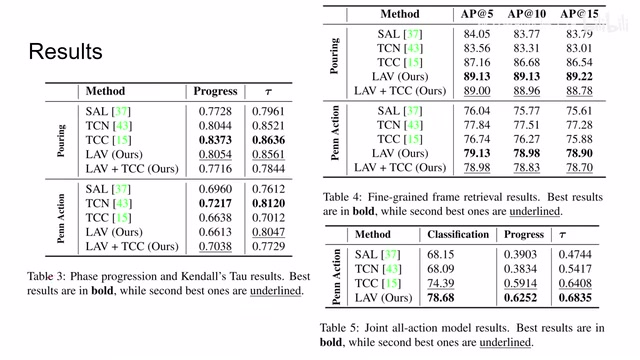
00:10:02–00:10:07 · 画面 03400:10:07–00:10:09 · 画面 035
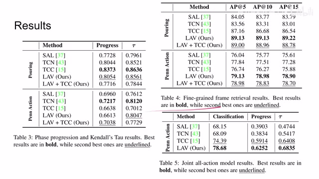
00:10:07–00:10:09 · 画面 03500:10:09–00:10:16 · 画面 036
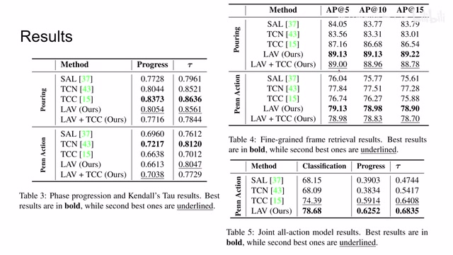
00:10:09–00:10:16 · 画面 03600:10:16–00:10:35 · 画面 037
00:10:16–00:10:35 · 画面 037那么总的来说，本文的核心呢就是在这个 soft DTW 的基础上寄出了这个 contrastive idm，用它呢来取代了我们之前 tcn 里面的 triplet loss，实验证明了这也是一种可行的方案，但是呢这些论文和 tcn 呢其实都还有一个悬而未决的问题隐藏在这个数据集里，因为这些所有的数据集呢它所进行的这个动作呢都是单向的动作。
00:10:35–00:11:12 · 画面 038
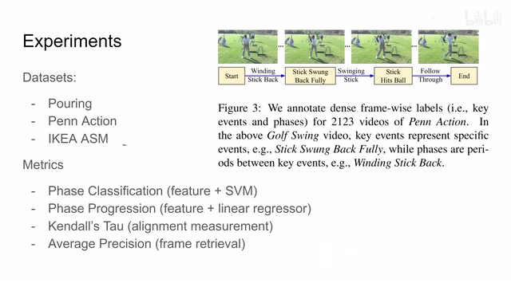
00:10:35–00:11:12 · 画面 038也就是说从语义的角度来讲，我视频开头的图像信息随着视频的发展一直到视频结束，这些语义信息是逐渐变化而且各不相同的，那么现在存在的问题就是假如说我的视频它的开头和结束虽然它们时间上差得很远，但是它们表达的语义信息又是完全相同的，那么这个时候如果再使用这样的 loss 就有点违反直觉了，所以这也是未来一个很有趣的研究方向。
好的，那以上就是我对这篇论文的简单的分析，感谢您的收看，再见。
00:11:12–00:11:12 · 画面 039
00:11:12–00:11:12 · 画面 039转写与来源说明 · 0 个自动复核提示
保留 27 个原始语音片段，0 个片段触发自动复核提示。提示仅用于定位可能的术语、重复或识别问题，不等于已确认错误。
讲解画面为源视频截图（640×360），不是可编辑 PPT 文件。全片按每秒 2 帧扫描内容变化，逐步展开页保留；连续动画保留代表画面。清晰度受源视频限制。
原视频：paper/合集_2026-10-16_表征学习/[论文简析]Learning by Aligning Videos in Time[2103.17260].mp4
SHA-256：ba8eeb5b0b12c134255080cafa966e6214cb6e134bafd78764d81ee25f77c16f
全文按视频语音与画面制作。原论文可从上方链接下载；完整资料包保留全文、原始逐字稿、字幕和校对记录。